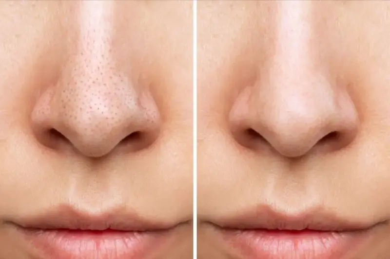

Curățarea profundă fără a afecta bariera protectoare este cheia
unui ten curat, lipsit de puncte negre.
Curățarea profundă fără a afecta bariera protectoare este cheia
unui ten curat, lipsit de puncte negre.
Ce sunt punctele negre?
Punctele negre, sau comedoanele deschise, sunt un amestec de sebum în exces și celule moarte ale pielii care rămân blocate în pori. Spre deosebire de comedoanele închise (micile puncte albe), acestea au o deschidere la suprafață, unde sebumul se oxidează în contact cu aerul, căpătând acea culoare închisă caracteristică.
Este esențial de înțeles: punctele negre nu sunt „murdărie” care poate fi pur și simplu spălată. În climatul din România, cu veri prăfuite și variații mari de temperatură, porii se înfundă mai rapid. Fără o exfoliere corectă, sebumul se densifică, dilatând pereții porilor și oferind tenului un aspect neuniform și porros.
Cauzele apariției și porii dilatați
Principalul declanșator este hiperkeratoza (reînnoirea celulară lentă) combinată cu activitatea crescută a glandelor sebacee. Nu este afectată doar estetica, ci și elasticitatea pielii: dacă un comedon rămâne în por prea mult timp, acesta își pierde capacitatea de a se retracta, transformându-se într-un „crater” permanent.
Un factor suplimentar, des întâlnit în orașe mari precum Bucureștiul, este apa dură de la robinet. Aceasta perturbă pH-ul pielii, forțând glandele sebacee să lucreze în exces pentru a compensa uscăciunea. Rezultatul este un cerc vicios: pielea este deshidratată la suprafață, dar blocată de comedoane în interior. O îngrijire corectă nu trebuie să „usuce” punctele negre, ci să le dizolve conținutul.

Reguli pentru combaterea punctelor negre
Ingrediente care dizolvă și curăță
| Ingredient | Acțiune asupra porilor |
|---|---|
| Acid Salicilic (BHA) | Singurul component care pătrunde adânc în pori și dizolvă dopurile de sebum din interior. |
| Niacinamidă (Niacinamide) | Normalizează vâscozitatea sebumului, prevenind oxidarea și înnegrirea acestuia în pori. |
| Kaolin și Ilit (Argile) | Absorb excesul de grăsime de la suprafață, prevenind formarea de noi comedoane. |
| Retinoizi (Retinol) | Accelerează reînnoirea celulară, împiedicând blocarea porilor cu celule moarte. |

Ce să NU faci când ai puncte negre?
Cum să micșorezi porii pe termen lung?
Porii nu sunt uși, deci nu se pot „închide” la comandă. Cu toate acestea, pot fi făcuți mult mai puțin vizibili. Regula de aur: por curat = por mic. Imediat ce dizolvi dopul dens de sebum cu ajutorul acizilor BHA, pereții porului vor începe să se retracteze în mod natural.
Pentru a menține rezultatul, folosește produse care sporesc elasticitatea pielii (peptide, retinol). În combinație cu o hidratare de calitate, acestea vor crea un efect de „piele plină”, în care relieful se uniformizează, iar porii devin practic invizibili.

Cele mai bune produse pentru îngrijirea pielii cu puncte negre


Protocol Zilnic: Dimineața vs Seara
Pentru ca porii să rămână curați, iar zona T să nu lucească încă de la prânz, este esențial să împarți rutina în două faze: protectoare și terapeutică.
| Momentul zilei | Etapa de îngrijire | De ce este necesar? |
|---|---|---|
| Dimineața | Curățare blândă + Niacinamidă + SPF | Niacinamida controlează sebumul pe parcursul zilei, iar SPF-ul împiedică oxidarea și înnegrirea acestuia sub soare. |
| Seara | Dublă curățare (Ulei + Gel) | Uleiul hidrofil dizolvă dopurile de sebum și resturile de SPF pe principiul „grăsimea dizolvă grăsimea”. |
| Activ (2-3 ori pe săptămână) | Tonic cu BHA (Acid Salicilic) | Pătrunde adânc în pori, „aspirând” comedoanele dense și micșorând diametrul porilor. |
| SOS-Care | Mască cu caolin (argilă) | Aplică doar pe zona T după tonicul cu BHA pentru un efect maxim de detoxifiere a porilor. |
Sfat pentru România: Vara, când indicele UV în orașe precum București sau Iași este extrem de ridicat, oxidarea sebumului are loc mult mai rapid. Dacă simți că porii se „înfundă sub ochii tăi”, adaugă în rutina de dimineață un spray antioxidant sau apă termală pentru a reîmprospăta pH-ul pielii pe parcursul zilei.
Factori externi și îngrijirea în România
În timpul verii, în România, praful urban și temperaturile ridicate lucrează împotriva pielii tale: sebumul se topește și se amestecă cu particulele poluante. Apa dură din marile orașe elimină lipidele benefice, provocând glandele sebacee la o hiper-reacție de compensare.
În aceste condiții, soluția ideală este dubla curățare de seară: balsam hidrofil + gel blând. Acest proces permite dizolvarea eficientă a punctelor negre fără a usca excesiv pielea, protejând-o de stresul oxidativ și de factorii de mediu agresivi.
Întrebări frecvente despre punctele negre
Cât timp trebuie să folosesc acizii BHA pentru ca porii să se curețe?
Primele rezultate, sub forma iluminării porilor, sunt vizibile după 10–14 zile. Totuși, pentru o curățare profundă și o retragere vizuală a pereților porului, este necesar un ciclu complet de reînnoire a pielii — aproximativ 28 de zile de utilizare constantă.
Pot fi închiși definitiv porii dilatați?
Nu, porii sunt canale naturale pentru eliminarea sebumului. Dar aceștia pot fi făcuți practic invizibili, menținându-le curățenia și elasticitatea pereților cu ajutorul retinolului și al niacinamidei. În clinicile din București sau Cluj, pentru acest scop se utilizează frecvent și procedura HydraFacial.
De ce punctele negre revin imediat după curățarea facială?
Acest lucru se întâmplă din cauza sebumului dens și a hiperkeratozei. În condițiile verilor prăfuite din România, porii se înfundă mai rapid. Dacă nu dizolvi dopurile de sebum cu acizi blânzi în rutina de acasă, glanda sebacee va umple porul gol în doar 2-3 zile.
Ajută măștile cu argilă la eliminarea punctelor negre?
Da, caolinul și ilitul absorb excelent grăsimea de la suprafață. Însă pentru a acționa asupra comedoanelor profunde, argila este mai eficientă dacă este folosită după un tonic cu BHA: acidul desface dopul de sebum, iar argila „extrage” resturile la suprafață.